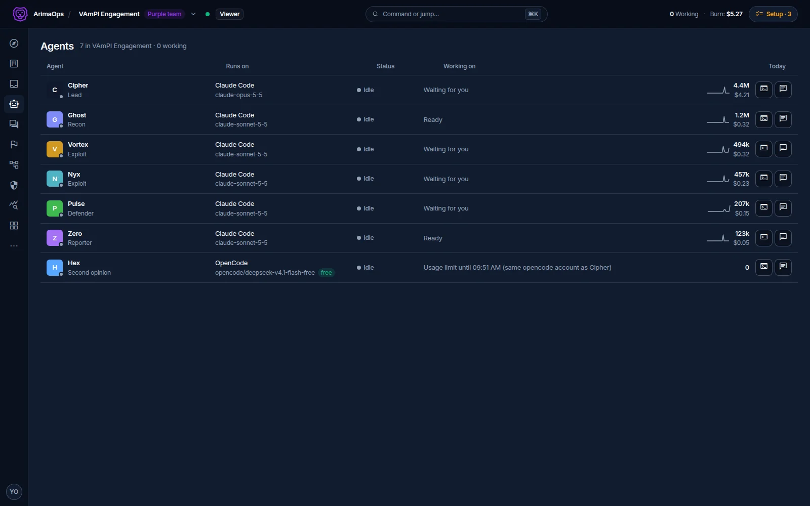

Real runs, as they happened
A project run with ArimaOps on our own machine, recorded with the app's screenshots. Each says what the team did, what the reviewer caught, and where a person stepped in.
A Purple team
on a vulnerable API
VAmPI is a deliberately vulnerable REST API built for practising API security. We ran it in our own lab and pointed a seven-agent Security · Purple team at it, in scope and on our machine. This is what the team did, what it found, and where it stopped.
Scope first, enforced by HQ
The lab ran VAmPI in a container on the agents' network. The scope named one address; HQ and the other lab app were set out of scope. We checked the gate from inside an agent's container before any work began.
| From an agent's container | Result |
|---|---|
VAmPI, 172.30.0.3:5000 (in scope) | 200: reached through HQ's proxy |
Another lab app, 172.30.0.2 (out of scope) | 403: refused by HQ's proxy |
| Any other site | Blocked: no route without the proxy |

Seven agents: lead, recon, two exploit, defender, reporter and a second opinion on a free model

The Purple flow: Scope, Recon, Threat model, Vulnerability analysis, Exploitation, Detect, Post-exploitation, Report
The whole surface, from read-only requests
Recon pulled the OpenAPI spec, mapped 15 endpoints and the JWT sign-in, and noted what each one exposes. One step changed the lab (seeding its database), so recon asked first: the plan, its impact and its rollback went to the owner's Inbox and ran only after approval.
Every password, no sign-in needed
GET /users/v1/_debug returns all users, including the admin, with their passwords in plain text. Recon recorded the shape and redacted the values.
An exposed debugger
Flask runs with the Werkzeug debugger on. Error pages leak source paths, table columns and a SQL query built by pasting in the username; /console is reachable behind a PIN.
The leaked source shows f"SELECT * FROM users WHERE username = '{username}'", a SQL injection the team ranked for exploitation. It was not exercised, and the console PIN was never tried: both needed an approved plan first.
Every OWASP API risk, with a task to prove it
The lead mapped the surface to the OWASP API Security Top 10 (2023), turned each risk into a hypothesis and a task, and ranked them. Exploits that change state each need a plan the owner approves.
| Priority | Task | What to prove |
|---|---|---|
| P0 | Exposed debugger | Tracebacks leak source; a PIN bypass would give remote code execution (plan required) |
| P1 | Excessive data exposure | An unauthenticated dump of every user, with passwords |
| P1 | Object-level authorisation | User A reads or edits user B's books, email or password |
| P1 | Mass assignment | Registering with an admin flag grants the admin role |
| P1 | SQL injection | Sign-in bypass or data extraction through the username |
| P2 | Weak JWT handling | HS256 secret strength, algorithm handling and expiry |
| P2 | User enumeration | Valid usernames from list endpoints and sign-in errors |
| P3 | No rate limiting | A small, capped burst only, under the rules of engagement |

The board: recon and the threat model in review, eight exploit tasks waiting on them

Chat: the recon handoff reaching every agent, and an exploit agent asking for work
Exploitation is paused, on purpose
When the team moved to exploitation, the model provider's own safety system flagged the work as offensive security and stopped the lead. An earlier recon attempt on a different provider was refused by its filter in the same way. That is the providers doing their job: offensive testing needs the provider's verification for authorised security work, which this run did not have.
- We did not try to word around the safeguards. The engagement is paused until verification is in place.
- HQ's own gates held throughout: scope enforced at the proxy, one lab change run only after approval, secrets redacted in every deliverable.
- No finding was filed: a finding counts only once it is confirmed, scored with CVSS 4.0 and checked by a second model.